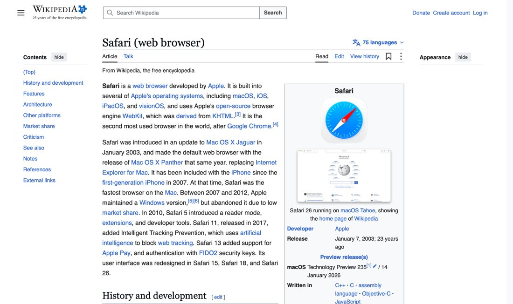

Claude in Safari
Расширение Safari и локальный MCP-сервер: Claude (или любой MCP-клиент) работает в вашем настоящем Safari, так же как «Claude in Chrome» в Chrome.
Неофициальный проект. Не связан с Anthropic и не одобрен ею. Расширение даёт MCP-клиенту управление вашими настоящими сессиями Safari: включайте его, только понимая это.

Что умеет
Вкладки
список, открыть, закрыть, перейти, история, фреймы
список, открыть, закрыть, перейти, история, фреймы
Чтение
снимок доступности с ref, текст страницы, режим чтения, shadow DOM, iframe (в том числе чужие домены)
снимок доступности с ref, текст страницы, режим чтения, shadow DOM, iframe (в том числе чужие домены)
Действия
клик, двойной и правый клик, наведение, ввод, клавиши, формы, прокрутка, drag and drop, диалоги, ожидание
клик, двойной и правый клик, наведение, ввод, клавиши, формы, прокрутка, drag and drop, диалоги, ожидание
Зрение
скриншоты (страница, вся страница, один элемент), PDF, распознавание текста на устройстве (Apple Vision, ru+en)
скриншоты (страница, вся страница, один элемент), PDF, распознавание текста на устройстве (Apple Vision, ru+en)
Файлы и данные
загрузка файлов на страницу, cookies, localStorage и sessionStorage (каждый раз спрашивает вас)
загрузка файлов на страницу, cookies, localStorage и sessionStorage (каждый раз спрашивает вас)
Отладка
консоль, журнал fetch/XHR, JavaScript в мире расширения или страницы
консоль, журнал fetch/XHR, JavaScript в мире расширения или страницы
Приватно
всё на 127.0.0.1; порт защищают проверка Origin и токен; чёрный список сайтов и подтверждения
всё на 127.0.0.1; порт защищают проверка Origin и токен; чёрный список сайтов и подтверждения

Установка
- Скачайте
Claude-in-Safari-ru.dmgиз Releases и откройте его. - Запустите «Подписать своим сертификатом»: мастер скопирует приложение в «Программы», проведёт через получение бесплатного сертификата Apple Development (Xcode и ваш Apple ID), подпишет приложение и положит сервер на место. Без сертификата: Safari → Разработка → Разрешить неподписанные расширения (после каждого перезапуска Safari заново).
- Safari → Настройки → Расширения: включите Claude in Safari и разрешите все сайты.
- Перезапустите Claude Desktop: сервер Claude in Safari уже добавлен в его конфиг.